01—20：评分前固定的样本；21—24：按预先规则补充的低分案例。顺序为原图、原标签、A预测、预测叠图。点击图片放大。
完整评估813条。没有在GSD训练或调阈值；这些图片不能替代完整定量结果。D模型尚未交付，因此不是A/D比较。
01 · gsd/test/000000000136 · 评分前固定样本
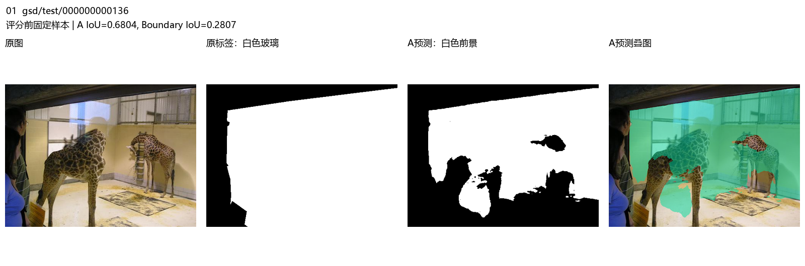
02 · gsd/test/14256747243_00b7018f25_b · 评分前固定样本
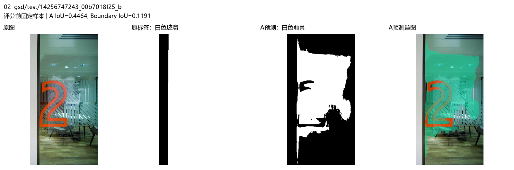
03 · gsd/test/196661185_55dccbf094_k · 评分前固定样本
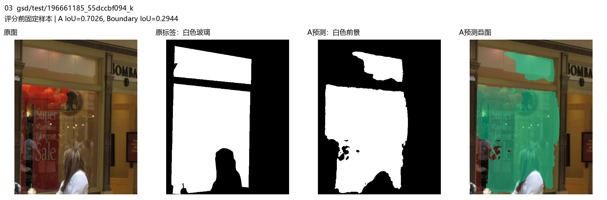
04 · gsd/test/2019_10_31_18_54_IMG_0771 · 评分前固定样本
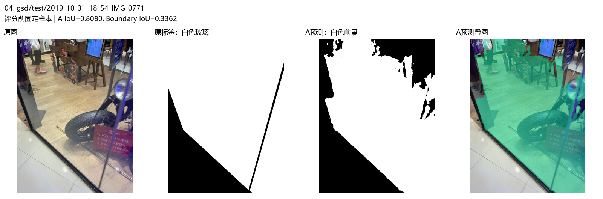
05 · gsd/test/2019_11_02_16_16_IMG_0991 · 评分前固定样本
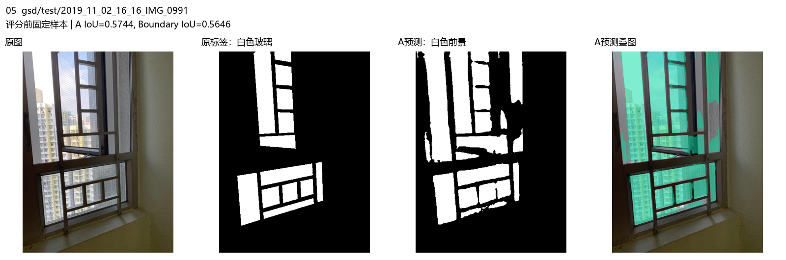
06 · gsd/test/2019_11_07_17_58_IMG_1280 · 评分前固定样本
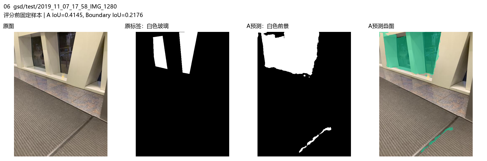
07 · gsd/test/23364736582_42120d6887_b · 评分前固定样本
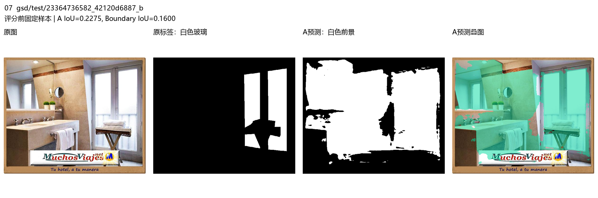
08 · gsd/test/28667333225_f4bcd1caf4_b · 评分前固定样本
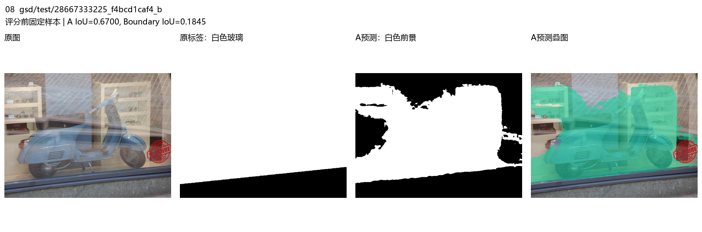
09 · gsd/test/379401860_bada07c57a_h · 评分前固定样本
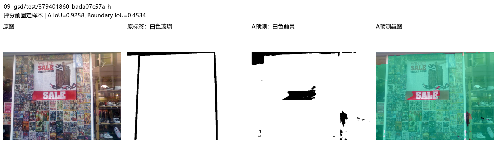
10 · gsd/test/4570163089_41378cdeba_k · 评分前固定样本
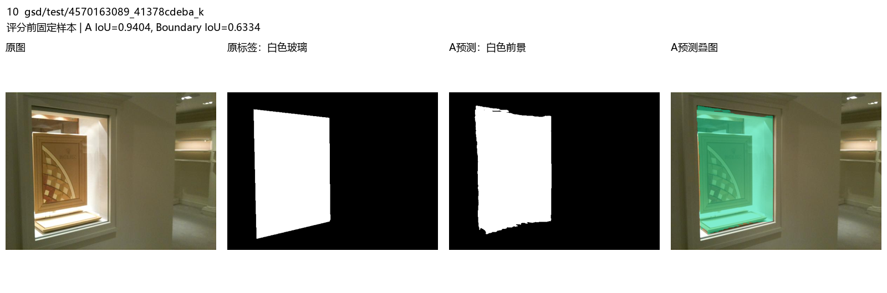
11 · gsd/test/5982034979_96d0549898_b · 评分前固定样本
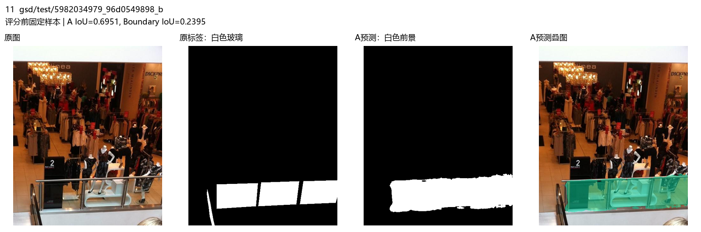
12 · gsd/test/8239122884_04c344898b_k · 评分前固定样本
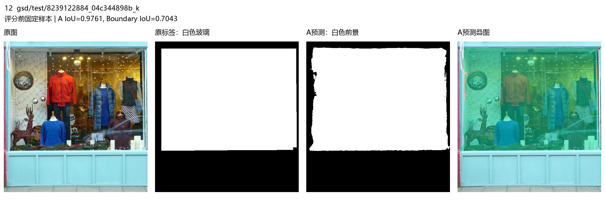
13 · gsd/test/ADE_train_00000888 · 评分前固定样本
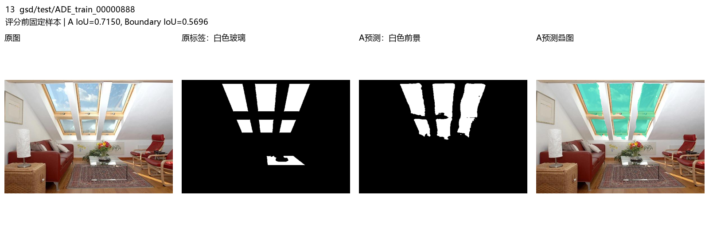
14 · gsd/test/ADE_train_00006860 · 评分前固定样本
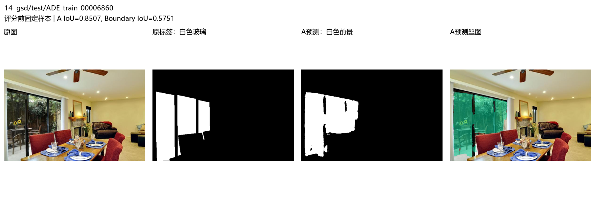
15 · gsd/test/IMG_3450 · 评分前固定样本
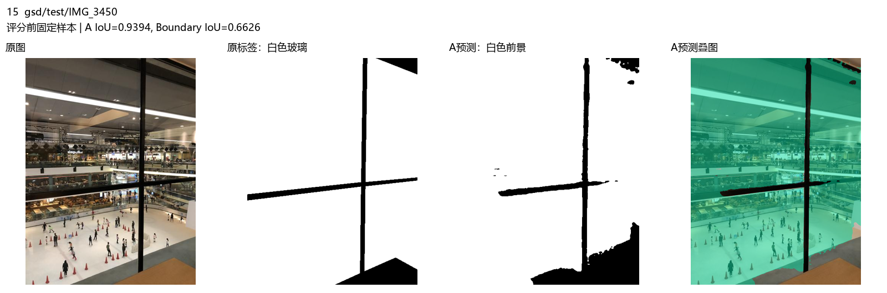
16 · gsd/test/fernand-de-canne-ZXd2XXcuHWM-unsplash · 评分前固定样本
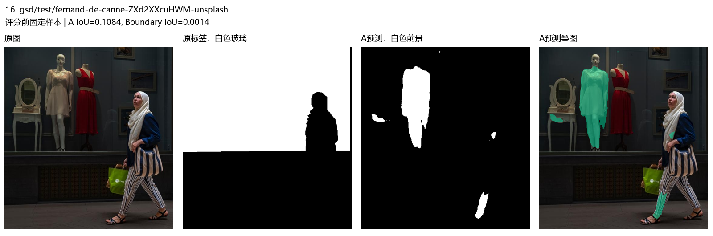
17 · gsd/test/photo-1507209575474-fa61e9d3086b · 评分前固定样本
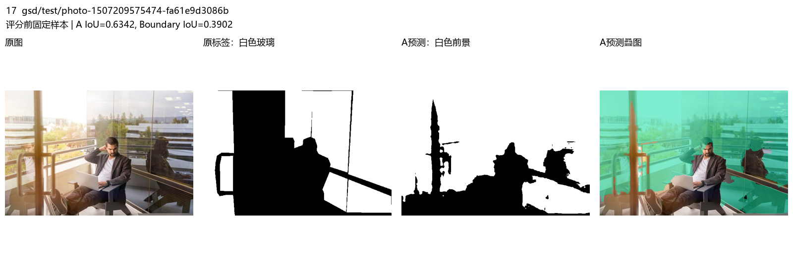
18 · gsd/test/sun_acshzpzroxnbzmdl · 评分前固定样本
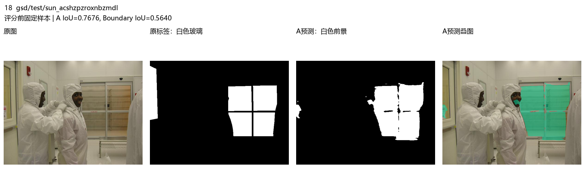
19 · gsd/test/sun_bldstlalggzleyzq · 评分前固定样本
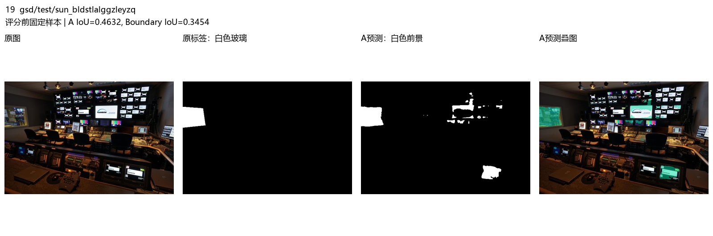
20 · gsd/test/yrN35bRX--I · 评分前固定样本
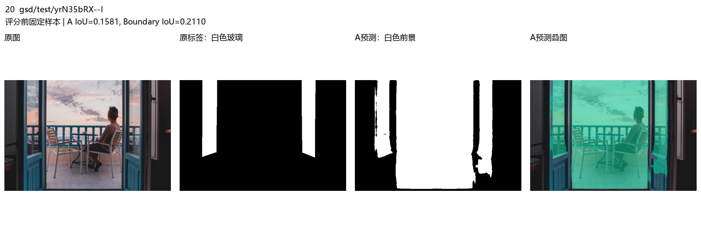
21 · gsd/test/122355684_81bf2b3d28 · 低分案例：three lowest per-image foreground_iou, three lowest per-image boundary_iou
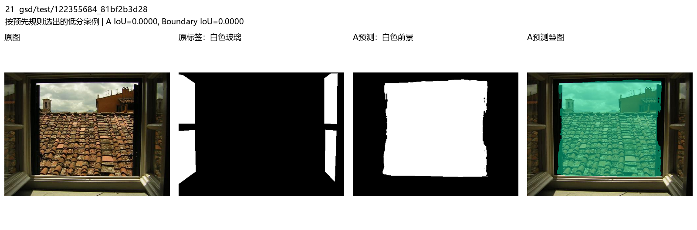
22 · gsd/test/ADE_train_00001948 · 低分案例：three lowest per-image foreground_iou, three lowest per-image boundary_iou
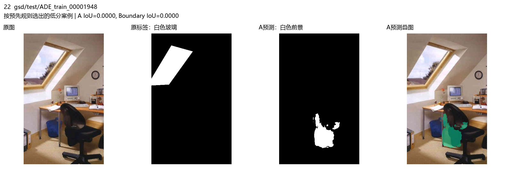
23 · gsd/test/ADE_train_00003715 · 低分案例：three lowest per-image foreground_iou
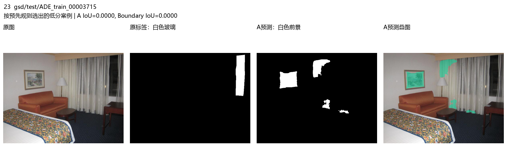
24 · gsd/test/23446117346_d34bb192e9_b · 低分案例：three lowest per-image boundary_iou
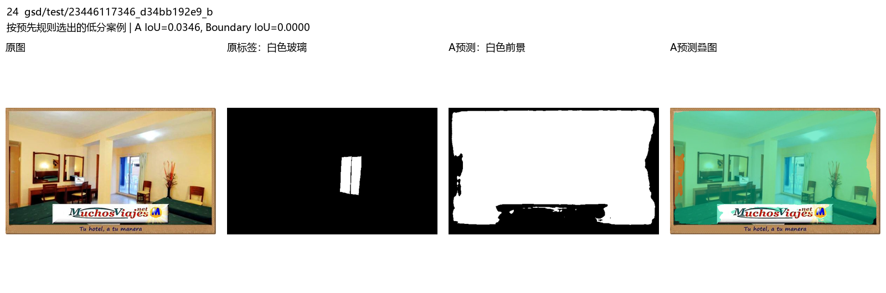